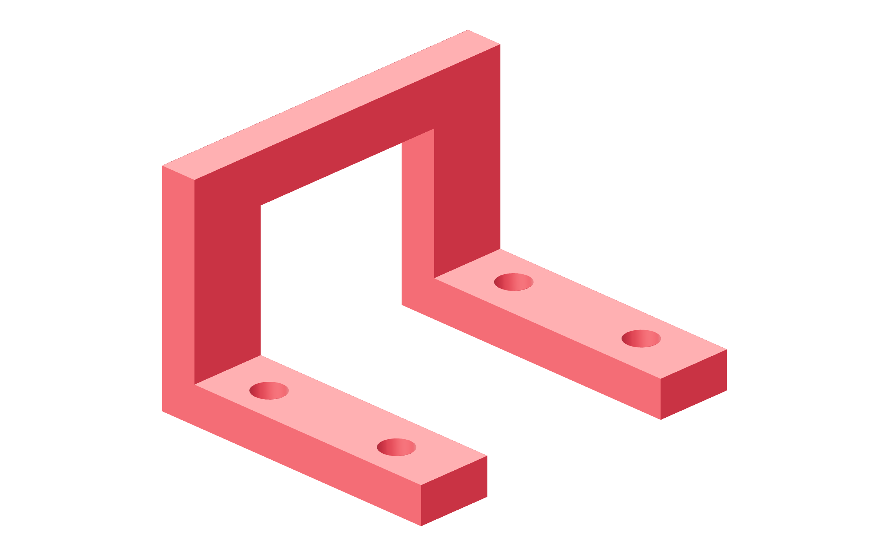

Observation / fabrication145 / 179
Cut eight forked metal stops
The stops are formed angles with a relieved foot and upright. Their 3D bridge clears the supported rail while retaining its guide block.
Add8 pieces of 50.8 × 50.8 × 6.35 mm aluminum angle, cut 60 mm wide
Tools / setupMetal saw · vise / clamps · file · caliper · received rail / block

- Cut the angle 60 mm wide and shorten the upright to 38 mm from its mounting base.
- Remove the center 34 mm fork through the foot and lower 29.5 mm of upright; preserve the upper 8.5 mm bridge.
- Deburr and keep both remaining feet flat. Transfer the four foot mounting holes from the STEP face layout.
- Trial-fit over the actual supported rail: bridge intercepts the block and stays below the moving plate.
Ready when
The 3D fork clears the rail support and has an intact 8.5 mm bridge at 38 mm height; both mounting feet remain metal and flat. A cut bridge, distorted foot or plate-contacting height fails retention. Fabricate a correct formed stop before drilling its fixed plate.